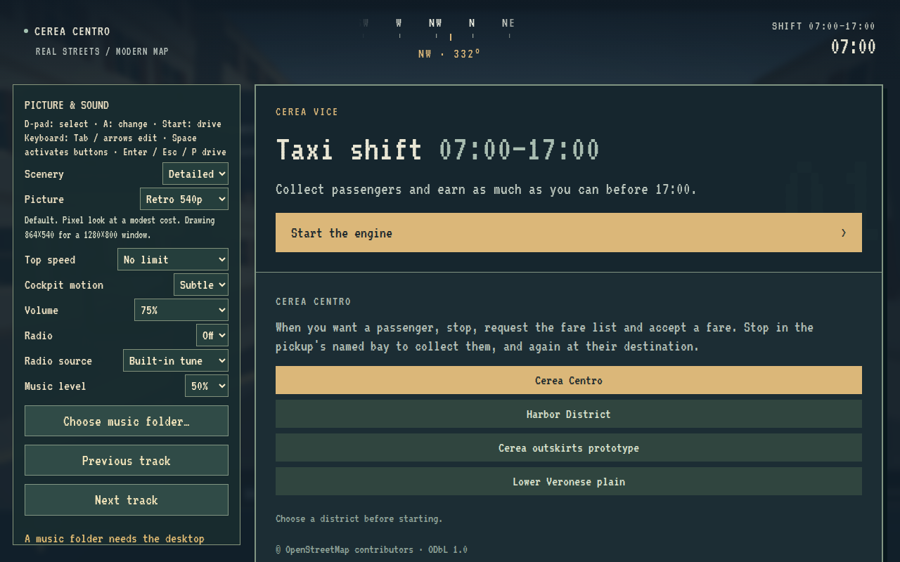
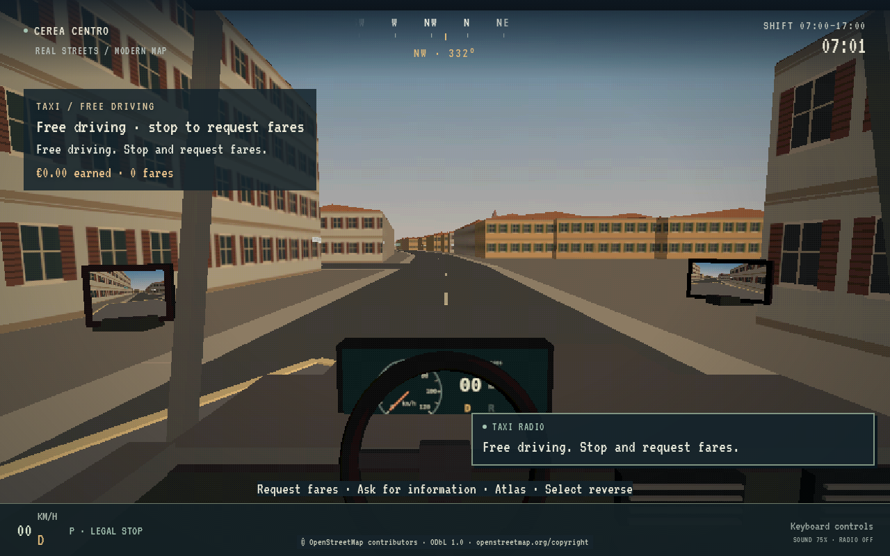
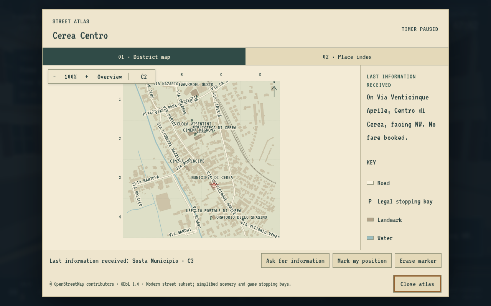
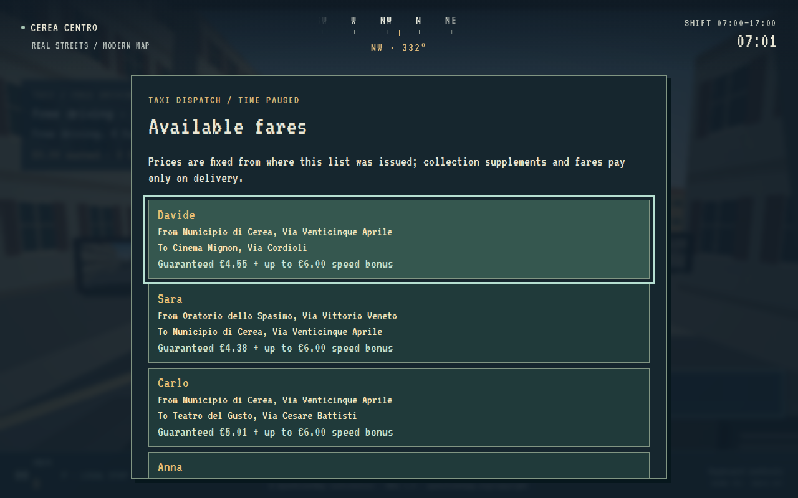
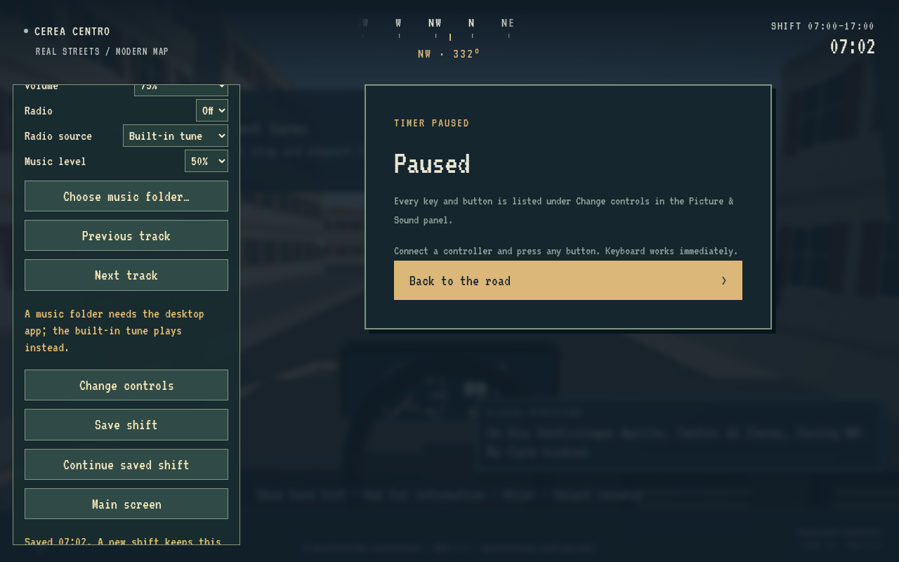

This guide covers the Cerea Centro taxi shift. Use a desktop browser with WebGL 2 and a keyboard or a standard controller. The guide itself also reads on a phone.
Start with a place to learn
Choose a district on the briefing screen, then Start the engine. Cerea Centro is a real-place pilot; Harbor District is the earlier fictional journey. The shift starts in free driving. A fare is offered only when you deliberately request one while stopped.

Read the road, not a GPS line
Learn the streets through signs, landmarks and deliberate information requests. The compass shows the car's heading. There is no automatic route line, objective arrow or live-tracking atlas marker.

Pull over and use the atlas
Come to a complete stop. F asks for information; T opens the paper atlas. The last information stays beside the map. A successful information request or a deliberate estimate changes your knowledge marker; merely driving, parking or serving a passenger does not move it.
Zoom, pan and use the street index to work out your route. Reading the atlas pauses shift time. Close it before driving again.

Essential keyboard controls
| Action | Default key |
|---|---|
| Steer | A / D, or left / right arrows |
| Accelerate | W or up arrow |
| Brake | S or down arrow |
| Handbrake | Space |
| Forward / reverse, fully stopped | R |
| Confirm pickup or dropoff | Enter |
| Request fares, while stopped | O |
| Open atlas, while stopped | T |
| Ask for information | F |
| Pause / resume | Escape or P |
Use Change controls in Picture & Sound for the complete keyboard/controller mapping and remapping. Standard controller prompts remain available in the game.
Cerea Centro now plays as a taxi shift. Drive freely, and when you want work, stop and ask dispatch for fares. Choose one from the list, collect the passenger, drive them there using signs and the atlas, stop and complete the fare. You are then free to drive again until you next ask. The original Harbor District journey is still selectable.
Your working day
- Start at 07:00, beside the Municipio, free driving. No fare is offered or assigned automatically, either at the start of the shift or after a dropoff.
- The clock advances at 30 game seconds per active simulation second: a 07:00–17:00 shift lasts about 20 active minutes. Free driving uses this normal shift clock: cruising to learn streets or to position yourself is working time. There is no separate untimed mode.
- Pause screens, atlas reading and the fare list freeze the clock and the current ride's bonus timer.
- The sky and daylight change as the working day progresses.
- At 17:00, the shift ends and shows earnings, completed rides, speed bonuses, collisions and information requests.
- A passenger still aboard (or still walking to the taxi) at closing time has not completed the fare and does not pay. Start another shift to try for a higher total.
Requesting and choosing fares

- Come to a full stop anywhere and press Request fares (D-pad down / O by default; remappable in Change controls). Requests while moving, while scenery is loading or while you already have a ride are refused with an explanation.
- The fare list shows up to four distinct fares, each with the passenger, pickup (place and street), destination (place and street) and the complete guaranteed payment, including any long-collection supplement, plus the maximum speed bonus. Reading the list pauses the clock. The list responds only once keys and buttons held from driving have been released, so a carried-over press cannot accept or close it.
- Up / down (D-pad, left stick, arrows or W / S) selects a fare; A / Enter accepts the selected fare. With a mouse, click a fare to select it, then Accept selected.
- B / Backspace closes the list without accepting anything. Y / N replaces the whole list with a new one, without a penalty. Start / Escape opens the pause/save menu; resuming returns to the road, not to the list.
- A closed list never reopens by itself. It is kept, unchanged, while you drive, pause, save and load. Press Request fares again at any stop to read the same fares with the same quotes.
When the list refreshes. A list is issued on your first request after the shift starts or after you accept a fare, and it is replaced only when you choose New list. Accepting one fare removes the rest of the list (other drivers take them), so your first request after a dropoff issues a fresh list. Nothing else rerolls it. Fare identities and quoted values are stored, so closing, reopening, pausing and saving/loading show the same offers. Starting a new shift clears the list.
Accepting commits the trip: there is only ever one accepted ride, and the list cannot be requested again until it is delivered. Closing the list or asking for a new one never boards a passenger, completes a fare or pays anything.
Collecting and delivering
- Find the accepted passenger's named pickup stop. Taxi stops do not show waiting people, so the goal is never highlighted from a distance.
- Stop fully inside the marked area, then use passenger service (A / Enter by default). That deliberate action commits the pickup: the passenger steps out of a nearby doorway (or another off-street spot beside the stop), walks to the taxi, going around the bonnet or boot if they start on the driver's side, and gets into the seat beside you. Look right to watch them. The taxi is held still for these few seconds and the dashboard says so; the speed-bonus clock starts once they are seated.
- Reach their destination, stop in its named area and confirm passenger service again. The fare pays at once, the seat clears and the passenger walks away from the taxi toward the kerb before disappearing. You return to free driving.
- Keep working until 17:00. A fresh shift uses a different random sequence; loading a save preserves its existing sequence.
The walk is presentation only. It happens only beside your stopped taxi at the accepted pickup, so it never acts as a distant goal marker. Pausing, reading the atlas or loading scenery freezes it with the clock. Saving during the walk stores its progress; loading resumes it from the same point, beside the same stopped taxi. A passenger walking away after dropoff is not saved: after loading they are simply gone. Restarting a shift removes any walking passenger. Decorative pedestrians are unrelated scenery and are unaffected.
Passenger service (A / Enter by default) confirms only when you are stopped at the current goal; it does not request directions. View / Select (PS Share) / F remains the information control on the road and in the atlas; while free driving it tells you where you are without suggesting a destination. Y / Triangle / T opens the atlas while stopped. B / Circle / R switches forward/reverse while stopped; LT remains brake only and RT accelerates in the chosen gear.
Requesting, reading, accepting, boarding, dropoff and saving do not move the atlas position marker. It still changes only when you ask for information or place your own estimate. When a goal changes, old route instructions are cleared while your marked position is retained. There is no route line or arrow toward a listed or accepted fare.
Game fares and speed bonuses
A completed ride pays:
- Guaranteed fare: €4.00 plus €1.20 per kilometre of the planned directed road route, plus €25 per kilometre beyond the first kilometre. A long collection journey also adds €25 per kilometre beyond its first kilometre, quoted from your stopped location when the fare list is issued. Collection supplements pay only when you complete the fare.
- Speed bonus: up to €6.00, decreasing linearly with active ride time.
- Slow arrival: still pays the base fare, even when its bonus reaches zero.
The ride's bonus budget is the larger of 100 seconds and 90 + route distance in metres / 4.5. The remaining bonus is €6 × max(0, 1 − active ride time / budget), rounded to cents. This is a prototype scoring rule, adjustable in the district's taxi data, rather than a real taxi tariff.
The bonus clock begins when the passenger is seated. Free driving and travelling to a pickup use shift time. Long collection journeys contribute to the quoted guaranteed payment, but pay nothing until dropoff. Each listed quote is fixed when the list is issued and retained through reopening and save/load; driving elsewhere before accepting, or taking a detour afterwards, cannot change it. The dashboard shows total earnings, completed fares and the base/remaining bonus for the passenger aboard. Planning with the atlas is free of timer pressure; learning shorter routes and recovering from wrong turns faster raises the score.
Places to learn
The expanded modern-map subset has 51 named streets and nine taxi stops:
- Municipio di Cerea
- Ufficio Postale di Cerea
- San Zeno in Santa Maria Assunta
- Oratorio dello Spasimo
- Teatro del Gusto
- Cinema Principe
- Cinema Mignon
- Scuola Olga Visentini
- Biblioteca di Cerea
Passenger names come from the authored roster; one list never names the same passenger twice. Pickup/destination pairs are drawn from all reachable distinct stops, with no pair repeated within a list and the last accepted pair avoided when alternatives exist. The first fare of each list follows the 0.8 dispatch sequence for the same seed. The seeded authored sequence remains available to unit-test fixtures for repeatable route and payout comparisons, while normal play uses fresh dispatch randomness.
The map now extends farther south and east, including the post office and the Oratorio dello Spasimo area, plus additional streets north and west. All taxi stop pairs have finite directed road routes. Pickup areas are game placements near mapped places, not claims about real taxi ranks or parking permissions. See map sources and layout and source details.
Presentation options never change fares, clocks, stopping areas or passenger-service rules. Sound fades out, and folder radio music pauses in place, while the atlas or pause screen freezes the shift. Radio controls never change the clock or fares.
The district context now owns indexed queries and the directed route graph. The route implementation changes in B preserve the old paths, route costs and speed-bonus accounting; all stop pairs are compared with exhaustive Dijkstra. Rendering-origin shifts affect neither service bays nor atlas knowledge. B adds no fares, stops or towns. See scalability notes.
Saving a shift

The briefing and pause menus include Continue saved shift; the pause menu also enables Save shift and Main screen (back to the briefing to change district, after a confirming second press; the manual save is kept). One manual slot per district stores the car and gear, timers, earnings and receipts, information counts, free driving or the accepted ride, the fare list with its identities and quotes, boarding progress, dispatch random state, and the atlas cursor/marker/source. Saves are now version 2. A 0.8 (version 1) save still loads: a pending offer becomes a one-fare list with the same passenger, journey and quote (an unquoted one is quoted when you next request fares at a stop), and an accepted ride stays accepted. Saves load paused, and local scenery must be ready before simulation can resume. Starting another shift does not overwrite a save. Unavailable storage, corrupt saves and incompatible maps produce a status message while preserving the current game and stored data.
Windows uses %LOCALAPPDATA%\CereaVice\profile for both WSL-launched and portable
builds. Removing the launcher's temporary bundle does not remove progress.
Control and presentation settings persist separately from the manual shift slot.
See playtest changes and validation.